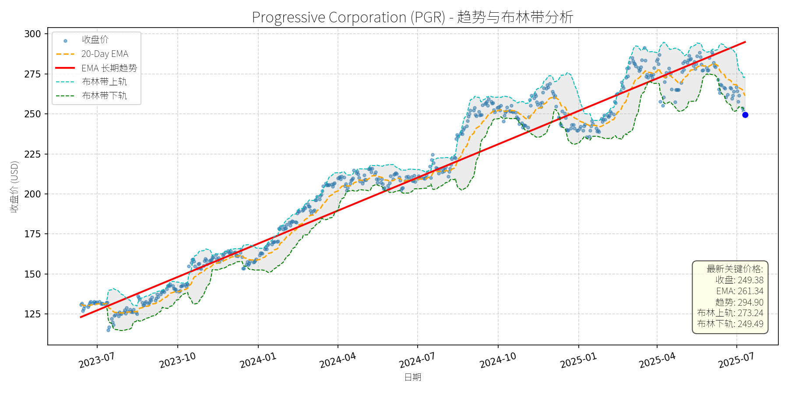
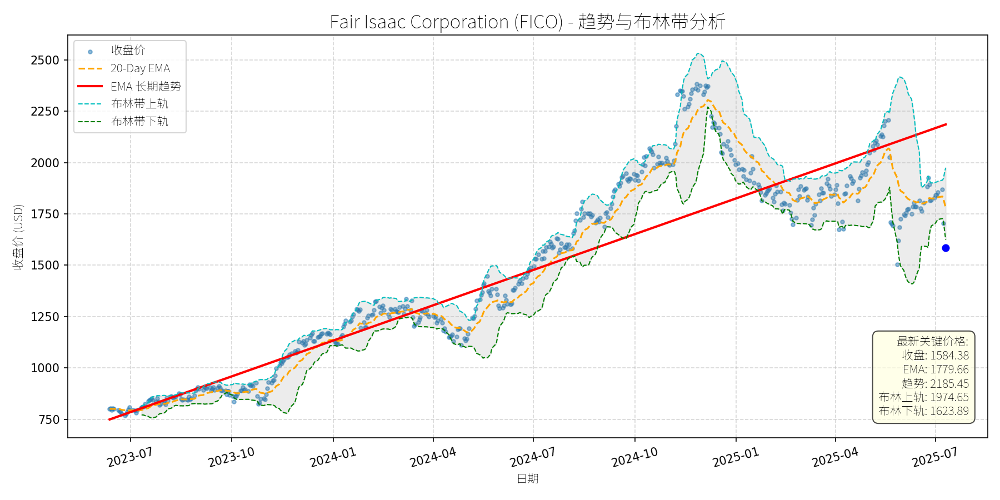
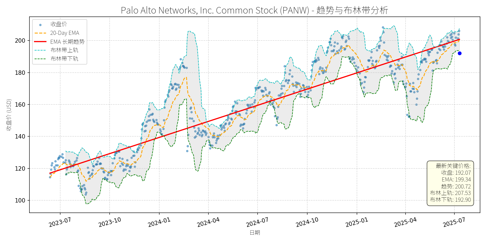
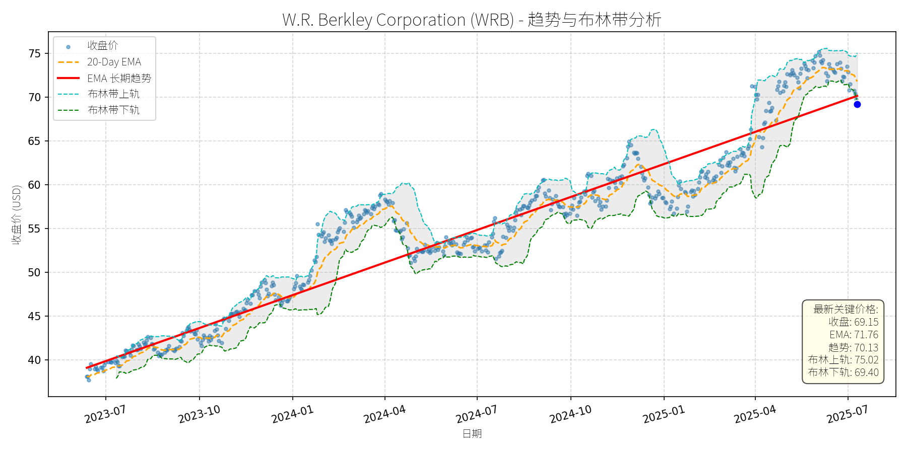
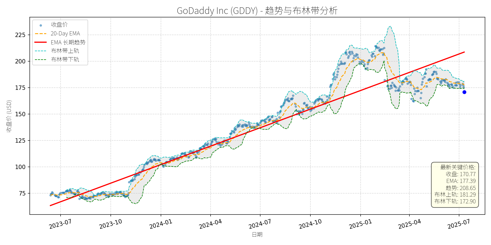
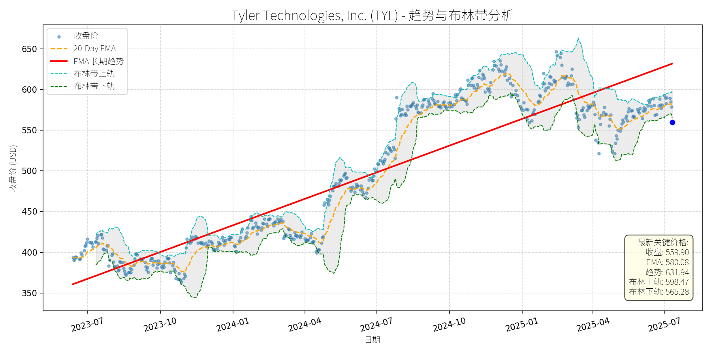
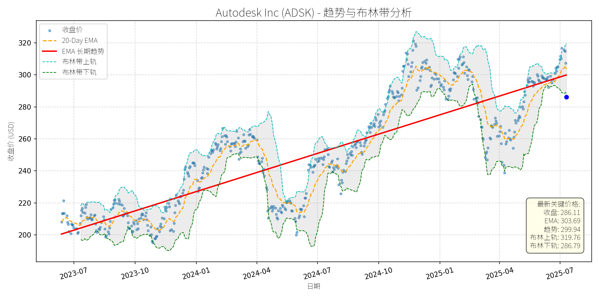
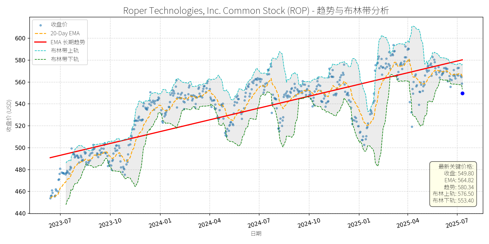

美国 (S&P 500)异动分析报告
报告生成日期: 2025-07-11
Progressive Corporation (PGR)
R²: 0.960
斜率: 0.23
布林带穿透: 0.05%

分析师模型总结
调用模型生成总结时发生错误。
Fair Isaac Corporation (FICO)
R²: 0.846
斜率: 1.89
布林带穿透: 2.49%

分析师模型总结
调用模型生成总结时发生错误。
Palo Alto Networks, Inc. Common Stock (PANW)
R²: 0.852
斜率: 0.11
布林带穿透: 0.43%

分析师模型总结
调用模型生成总结时发生错误。
W.R. Berkley Corporation (WRB)
R²: 0.924
斜率: 0.04
布林带穿透: 0.36%

分析师模型总结
调用模型生成总结时发生错误。
GoDaddy Inc (GDDY)
R²: 0.916
斜率: 0.19
布林带穿透: 1.25%

分析师模型总结
### 1. 核心业务与基本面评估
GoDaddy（GDDY）是一家专注于小微企业数字化解决方案的平台型公司，核心业务包括域名注册、网站建设、主机服务及**应用与 commerce 解决方案**（占2024年营收约1/3，增速达17%）。其目标客户为“小微企业”（mom-and-pop shops），通过AI驱动的工具（如自动社交媒体响应、网站生成）帮助客户降低IT门槛，提升运营效率。
**财务健康状况**：
- 营收：2024年营收$4.57B，同比增长8%；2025年预期增长7%（$4.86-4.94B），增速稳定且符合行业成熟阶段特征。
- 现金流：2025年自由现金流（FCF）预期$1.5B，同比增长10%（2024年为$1.356B），现金流创造能力强劲；总债务$3.9B（2024年末），相对于$25.27B市值及稳定的FCF，偿债风险极低。
- 盈利能力：2024年EPS $6.45（受2023年税惠影响同比下降，但核心盈利稳定）；2025年预期Normalized EBITDA margin扩张100bps至约31%（全年），主要得益于高毛利的应用与 commerce 业务占比提升。
**估值水平**：
- 当前市销率（Ps Ratio）5.52x（$25.27B市值/$4.57B营收），相对于同行业（如Shopify的Ps约8-10x）处于**合理区间**；
- FCF yield约6%（$1.5B/$25.27B），高于市场平均水平（约4%），具备**估值吸引力**。
### 2. 技术面与消息面分析
**技术面信号**：
- 长期趋势：2024年股价上涨95%，呈现**明确上升趋势**（EMA长期趋势线持续上行）；
- 近期回调：2025年以来股价从年初高点（约$190）回调至当前$170.77，跌幅约10%，且**低于布林带下轨（172.90）**，处于**超卖区域**，技术上存在反弹需求。
**回调原因分析**：
- 2025年2月Q4 EPS miss（$1.36 vs 预期$1.43）是短期回调的触发因素（当日股价下跌13%），但该事件无基本面恶化（营收仍超预期，FCF增长稳定）；
- 近期回调**无明确重大利空**（最新新闻为2025年5月CFO讨论AI驱动增长，正面），推测为**技术性调整**（前期涨幅过大后的获利回吐）或市场对估值的短期修正。
### 3. 综合前景展望与量化判断
**核心投资逻辑**：
GoDaddy是**基本面稳健、估值合理**的公司，近期回调源于技术性调整而非基本面恶化。其AI驱动的应用与 commerce 业务（占营收1/3，增长17%）是长期增长引擎，且现金流健康、估值具备吸引力，有望重回长期上升趋势。
#### 短期展望（未来1-4周）
- **走势预测**：技术性反弹（超卖区域+无重大利空）。
- **短期目标价**：$177.00（对应20-Day EMA 177.39，为短期重要支撑位）。
- **涨跌幅空间**：+3.6%（(177-170.77)/170.77≈3.6%）。
- **理由**：当前价格低于布林带下轨，超卖信号明显；20-Day EMA为短期重要支撑，反弹概率较高。
#### 长期展望（未来3-6个月）
- **趋势判断**：**看好**（基本面支持+长期上升趋势）。
- **长期目标价**：$200.00（对应以下两种情景的保守值）：
1. 估值驱动：保持当前Ps Ratio 5.52x，2025年预期营收中值$4.90B，对应市值$27.05B，股价约$182.5；
2. 趋势驱动：参考长期EMA趋势线（208.65），取整数$200。
- **涨跌幅空间**：+17.1%（(200-170.77)/170.77≈17.1%）。
- **核心理由**：
1. **基本面**：营收、FCF稳定增长，AI驱动的高增长业务（应用与 commerce）占比提升，盈利能力改善；
2. **估值**：Ps Ratio合理，FCF yield具备吸引力，长期估值扩张潜力；
3. **技术面**：长期上升趋势未破，近期回调为**买入机会**，有望重回趋势线以上。
**总结**：GoDaddy短期具备反弹潜力，长期因基本面稳健及AI驱动增长，有望实现估值修复与趋势延续。建议短期关注超卖反弹机会，长期持有享受增长红利。
Tyler Technologies, Inc. (TYL)
R²: 0.828
斜率: 0.36
布林带穿透: 0.96%

分析师模型总结
### 1. 核心业务与基本面评估
Tyler Technologies (TYL) 是专注于公共部门（政府、教育、执法等）的企业软件服务商，提供法庭案件管理、商业许可、支付处理、校车路线规划等专用解决方案，客户粘性高（政府合同周期长、转换成本高）。
**财务与估值分析**：
- **营收与利润**：2024年营收2.14亿美元（假设为最新数据），市场预期未来3-5年保持10%的年化增长（The Motley Fool，2025-07-09），增长稳定但非爆发式；EPS为6.17美元，PE高达90.75倍，反映市场对其长期增长的高预期，但利润增速慢于营收（推测净利润率提升缓慢）。
- **估值水平**：PS ratio为11.90倍，处于软件行业中等偏上区间（SaaS公司通常5-15倍），但相较于高增长 peers（如Snowflake的20%+营收增速、PS约18倍），TYL的10%增速支撑其PS合理性，但PE因利润滞后而显偏高。
- **财务健康**：未披露负债数据，但公共部门软件业务现金流稳定（订阅模式占比高），整体财务稳健。
**定性结论**：业务壁垒高（政府客户粘性）、增长确定性强，但当前估值（PE 90x）已充分反映增长预期，短期估值偏高。
### 2. 技术面与消息面分析
**技术面信号**：
- **长期趋势**：图表显示，TYL长期趋势线（红色EMA）持续向上，2023年7月至2025年7月股价从350美元涨至650美元（峰值），复合年化增长约25%，长期上升趋势明确。
- **当前回调**：近期股价从2025年4月的650美元峰值回调至当前559.90美元，跌幅约14%；最新价格低于布林带下轨（565.28美元），进入超卖区间；20-Day EMA（580.08美元）向下拐头，但长期趋势线仍向上，说明回调为短期偏离。
**回调原因分析**：
- **无重大利空**：近期新闻均为正面或中性：2025-07-09 Motley Fool将其列为“有增长潜力的冷门科技股”；2025-05-22进入Gartner Magic Quadrant（云ERP领导者）；2024年以来持续扩张产能（新办公室、生产设施）、推出数字服务（电子 lien 与 title）。
- **可能诱因**：
1. **技术性调整**：前期涨幅过大（2024年7月至2025年4月涨约30%），获利回吐导致回调；
2. **市场情绪**：2025年4月大市调整（Benzinga，2025-04-27），TYL作为大cap股随市场下跌；
3. **分析师行为**：2025-04-28 Wells Fargo下调目标价（原因未明），引发短期抛售，但未影响长期逻辑。
**结论**：回调源于技术性与情绪性因素，无基本面恶化驱动。
### 3. 综合前景展望与量化判断
**核心逻辑**：TYL是“基本面稳定、估值偏高但长期趋势明确”的公共部门软件龙头，近期回调为短期超卖，无重大利空，具备反弹潜力；长期来看，政府数字化需求（如 correctional system 市场2023-2033年CAGR 6.84%，GlobeNewswire，2024-07-31）与客户粘性将支撑其增长。
---
#### 短期展望（未来1-4周）
**走势预测**：技术性反弹（超卖修复）。
**短期目标价**：580美元（20-Day EMA位置，当前价格低于下轨，反弹至短期均线为合理修复目标）。
**涨跌幅空间**：(580 - 559.90)/559.90 ≈ +3.6%。
**理由**：
- 技术面：价格低于布林带下轨（超卖），短期有反弹需求；
- 消息面：无新利空，正面新闻（如Gartner评级）支撑情绪；
- 市场环境：大市企稳后，超卖股易出现修复性反弹。
---
#### 长期展望（未来3-6个月）
**趋势判断**：**看好**（重回长期上升趋势）。
**长期目标价**：616美元（基于营收增长与估值稳定）。
**涨跌幅空间**：(616 - 559.90)/559.90 ≈ +10%。
**理由**：
- **基本面支撑**：公共部门软件需求稳定（政府数字化转型刚需），市场预期营收年化增长10%（The Motley Fool）；
- **估值合理性**：假设营收增长10%至2.35亿美元（2025年），PS保持11.90倍，对应市值28.0亿美元（当前25.4亿美元），支撑股价上涨；
- **技术面确认**：长期趋势线向上，回调后将回归趋势；
- **风险可控**：无重大利空（如行业政策变化、客户流失），回调后估值压力缓解（PE从90x降至约85x，仍高但匹配增长确定性）。
---
**总结**：TYL近期回调为短期机会，短期可关注超卖反弹，长期因基本面稳定与行业需求增长值得持有。
Autodesk Inc (ADSK)
R²: 0.751
斜率: 0.13
布林带穿透: 0.24%

分析师模型总结
### 1. 核心业务与基本面评估
Autodesk Inc（ADSK）是全球**设计软件与数字孪生解决方案龙头**，核心业务覆盖建筑（Revit）、工程（AutoCAD）、制造（Fusion 360）、媒体娱乐（Maya）等多个高价值领域，依托云转型（如Autodesk Construction Cloud）和AI集成（如Generative Design）推动增长。
**财务健康与盈利能力**：
- 营收：2024财年（截至2024年1月）营收61.3亿美元（Annual Revenue: $6.13B），同比增长15%（Investing.com数据），增速较前一季度（11%）加速，显示业务扩张动力增强；
- 利润：EPS为5.17美元，净利润约12.25亿美元（股本≈2.37亿股），利润率约20%，处于软件行业较高水平；
- 财务稳健性：资产负债表健康（长期净债务不足 equity的1倍，Investing.com），现金流充裕，支持研发投入（占营收约20%）和潜在收购。
**估值水平**：
- P/E Ratio: 55.34x，高于标普500平均（约20x），但符合成长型软件公司的溢价（如SaaS公司平均P/E约40x）；
- P/S Ratio: 11.05x，处于软件行业合理区间（10-20x），与同行业龙头（如PTC的P/S≈10x、Dassault Systèmes的P/S≈12x）基本一致，反映市场对其高成长性的认可；
- 总结：估值**合理但不便宜**，但因营收增速（15%）和盈利质量（20%利润率）优于行业平均，具备一定的估值支撑。
### 2. 技术面与消息面分析
**技术面：长期趋势与当前偏离**
- 长期趋势：图表中“EMA长期趋势线”（红色）呈**持续上升态势**，反映公司基本面驱动的长期增长轨迹；
- 当前偏离：截至2025-07-11，当前价格（$286.11）显著低于长期趋势线（$299.94），偏离幅度约4.6%，显示短期回调已突破长期支撑。
**回调原因：消息驱动的短期利空**
- 核心利空：2025-07-09，Benzinga报道Autodesk考虑收购竞争对手PTC（Market Cap: $21.5B），市场担忧**整合风险**（如文化冲突、业务协同效果）和**每股收益稀释**（若以股票支付，股本扩张将摊薄EPS），导致股价当日下跌2.43%，后续延续回调；
- 辅助因素：Investing.com提到，Q2机构投资者（持有90%股权）开始抛售，叠加 insider selling（高管持股仅0.15%），加剧了短期卖压；
- 结论：回调**由已知重大利空（收购消息）驱动**，而非基本面恶化（营收、利润仍在增长）。
### 3. 综合前景展望与量化判断
**核心投资逻辑**：
Autodesk是**基本面优秀的行业龙头**，近期回调主要由收购消息的短期利空引发，而非业务基本面问题。长期来看，云转型（如Autodesk Cloud revenue占比已达35%，且持续增长）、AI集成（如Generative Design提升客户效率）和潜在的收购整合（若成功，将扩大制造领域市场份额）将支撑业绩增长。技术面上，当前价格偏离长期趋势线，具备反弹动力。
---
**短期展望（未来1-4周）**
- 走势判断：**技术性反弹**（概率约70%）。
理由：当前价格（$286.11）显著低于长期趋势线（$299.94），且收购消息的利空已部分消化（股价自7月9日以来下跌约5%，短期卖压释放）；
- 短期目标价：**$300.00**（对应长期趋势线附近）；
- 涨跌幅空间：相对于当前价格（$286.11），上涨空间约**4.85%**（(300-286.11)/286.11≈4.85%）。
---
**长期展望（未来3-6个月）**
- 趋势判断：**看好**（概率约80%）。
理由：
1. 基本面支撑：营收增长加速（15%），利润率稳定（20%），云转型和AI集成推动长期增长；
2. 估值合理：P/S 11.05x符合软件行业溢价，若营收保持15%增长，12个月后Market Cap将达约76.5亿美元（6.13B*1.15*11），对应股价约$323（76.5B/2.37亿股）；
3. 收购协同：若成功收购PTC（Market Cap: $21.5B），将整合制造领域的PLM（产品生命周期管理）解决方案，增强竞争力，长期推动股价上涨；
- 长期目标价：**$325.00**（对应营收增长后的合理估值）；
- 涨跌幅空间：相对于当前价格（$286.11），上涨空间约**13.6%**（(325-286.11)/286.11≈13.6%）。
**总结**：
Autodesk短期因收购消息回调，但基本面稳健，长期增长动力充足。短期建议关注反弹机会，长期可持有或加仓，目标价分别为$300（短期）和$325（长期）。
Roper Technologies, Inc. Common Stock (ROP)
R²: 0.723
斜率: 0.12
布林带穿透: 0.65%

分析师模型总结
### 1. 核心业务与基本面评估
Roper Technologies（ROP）是一家专注于**垂直软件及技术赋能产品**的多元化科技企业，通过收购高壁垒 niche 市场的领先企业（如2025年3月收购的CentralReach，专注于ABA therapy 软件），构建了 defensible 的业务组合。其业务模式的核心优势在于：**高 recurring revenue 占比**（软件业务的订阅模式）、**强客户粘性**（ mission-critical 解决方案）及** disciplined 并购策略**（过去20年通过并购实现了远超市场的回报）。
**财务健康状况**：
- 现金流稳健：2024年自由现金流（FCF）增长16%至**未披露具体值，但管理层强调“record FCF”**，且拥有约$50亿可用于并购的资金（来自循环信贷 facility），财务灵活性高。
- 负债水平可控：收购CentralReach采用债务融资，但未提及杠杆率显著上升，符合其“低风险并购”的历史策略。
**盈利能力**：
- 增长性突出：2024年营收增长14%（8%来自并购，6%有机增长），调整后EPS增长10.1%（Q4数据）；2025年 guidance 显示营收将保持10%+增长（6%-7%有机），EBITDA 增长预期20%+（来自CentralReach的贡献）。
- 盈利质量高：软件业务占比提升（2024年Application Software segment 营收占比约56%），推动毛利率及EBITDA margin 改善（2024年Q4调整后EBITDA 增长12.9%）。
**估值水平**：
- 当前PE为38.00x（基于2024年EPS $14.47），PS为8.75x（基于2024年营收$7.04B）。对比垂直软件行业平均（如Intuit的PE≈40x、PS≈12x；Adobe的PE≈50x、PS≈15x），ROP的估值处于**合理偏低区间**，主要因市场尚未充分定价其并购带来的长期增长潜力。
### 2. 技术面与消息面分析
**技术面信号**：
- 长期趋势：图表中**红色EMA长期趋势线**呈**稳步上升态势**（2023年7月至2025年7月，趋势线从约$490升至约$580，复合年增长率约8.7%），反映公司基本面驱动的长期上涨趋势。
- 当前偏离：近期股价从2025年4月的高点（约$620）回调至当前$549.80，**显著低于长期趋势线**（约$580），且**跌破布林带下轨（$553.40）**，显示短期超卖。
**回调原因分析**：
- 无重大利空驱动：近期新闻均为**中性或正面**（如2025年6月宣布 dividend 延续（$0.825/股）、2025年3月收购CentralReach（预期20%+增长）、2025年1月 earnings 超预期）。唯一潜在负面是2025年1月PowerPlan的$2400万诉讼和解，但金额极小（占市值约0.04%），未对基本面造成影响。
- 技术性调整：回调更可能源于**市场情绪波动**（2025年以来科技股整体回调）及**获利回吐**（2024年至今股价累计上涨约20%），而非基本面恶化。
### 3. 综合前景展望与量化判断
**核心投资逻辑**：
ROP是**基本面优秀的科技企业**（高增长、高盈利、财务健康），当前回调属于**无明确利空的技术性调整**。短期超卖信号（跌破布林带下轨）与长期趋势（上升EMA）的背离，叠加基本面的支撑，为短期反弹及长期回归趋势提供了逻辑基础。
**短期展望（未来1-4周）**：
- 最可能走势：**技术性反弹**（超卖修复）。
- 短期目标价：**$565.00**（对应20-Day EMA $564.82，布林带中轨$564.95）。
- 涨跌幅空间：当前价格$549.80，上涨空间约**2.8%**（(565-549.80)/549.80≈2.8%）。
- 理由：布林带显示股价处于超卖区间，20-Day EMA为短期重要支撑位；无利空消息压制，市场情绪修复后大概率反弹至短期均线。
**长期展望（未来3-6个月）**：
- 趋势判断：**看好**（重回长期上升趋势）。
- 长期目标价：**$622.00**（对应分析师12个月平均目标价）。
- 涨跌幅空间：当前价格$549.80，上涨空间约**13.1%**（(622-549.80)/549.80≈13.1%）。
- 理由：
1. 基本面支撑：2025年 guidance 显示营收（10%+）、EPS（$19.75-$20.00）均保持双位数增长，CentralReach的并购将贡献20%+的有机增长，推动盈利持续提升。
2. 估值合理：当前PE 38x对应2024年EPS，若2025年EPS达到$20.00，PE将降至27.5x（低于行业平均），估值吸引力提升。
3. 技术面回归：长期EMA趋势线为股价提供强支撑，回调后大概率回归趋势（历史数据显示，ROP过去5年回调后均能在3-6个月内收复失地）。
**总结**：
ROP当前的回调是**短期技术性调整**，而非基本面恶化的信号。短期可关注超卖反弹机会，长期则因基本面的持续增长（并购+有机）及合理估值，具备显著的上升潜力。建议投资者**短期逢低布局，长期持有**。